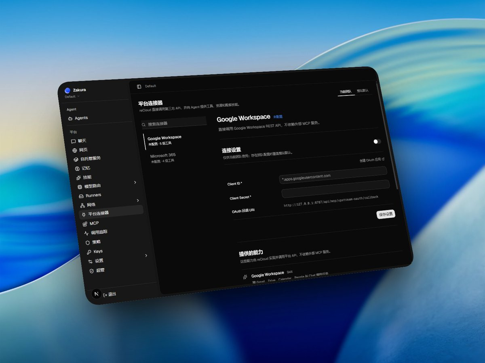

我们正在构建 Zakura ，一个通用平台，为您提供mcp、skill、云端电脑、浏览器和长期记忆的聚合，只需一次配置就能将你在多个平台上资源的与您新的 Agent 连接，永远不丢失您的信息。
自带的 Zakura Cloud Agent，随时准备为您在离开电脑时执行任务，它拥有完整桌面环境，并乐意与您本地 Agent 一同工作，一切数据都留在您自己的服务器上。
减少过多的配置，减少手动部署一个个复杂的项目，Zakura 希望为您一键准备好一切。
请关注我们： @moonrenddev @wuyuandev
GitHub：https://t.co/IoW6IGT3BY
自带的 Zakura Cloud Agent，随时准备为您在离开电脑时执行任务，它拥有完整桌面环境，并乐意与您本地 Agent 一同工作，一切数据都留在您自己的服务器上。
减少过多的配置，减少手动部署一个个复杂的项目，Zakura 希望为您一键准备好一切。
请关注我们： @moonrenddev @wuyuandev
GitHub：https://t.co/IoW6IGT3BY
